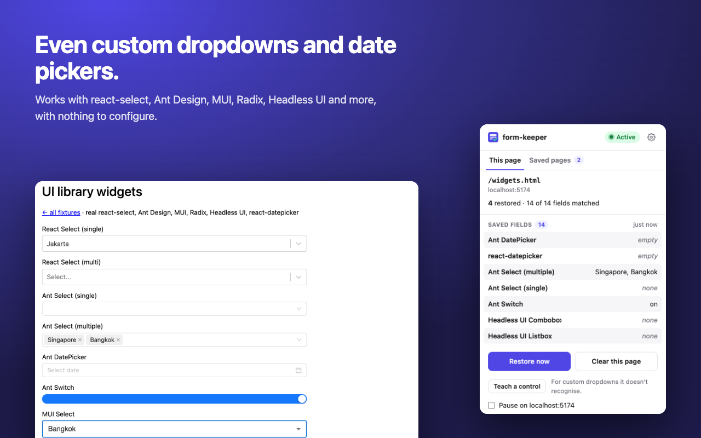
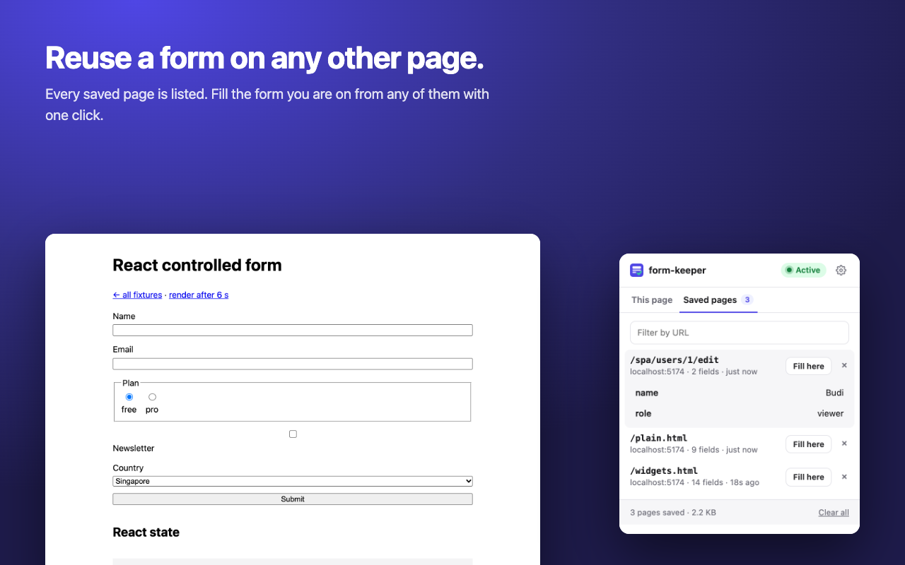
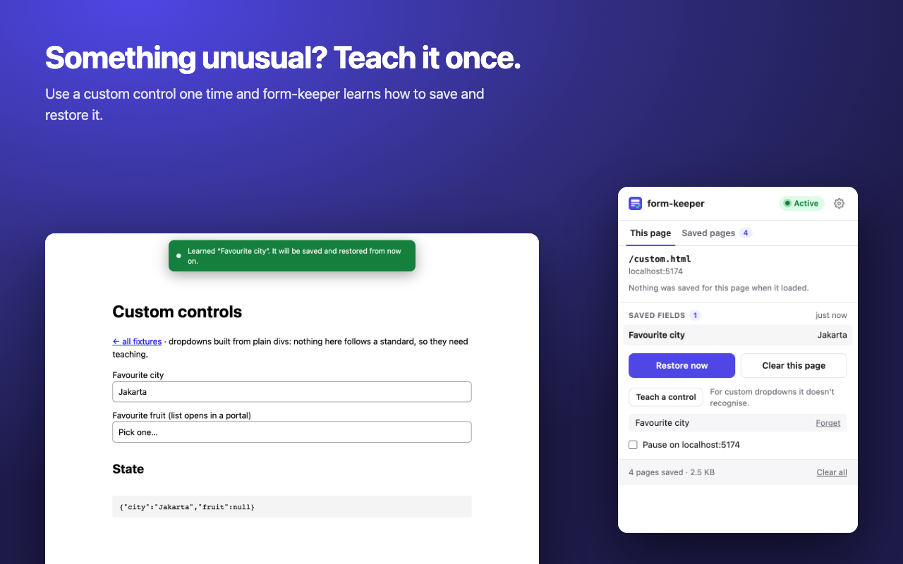
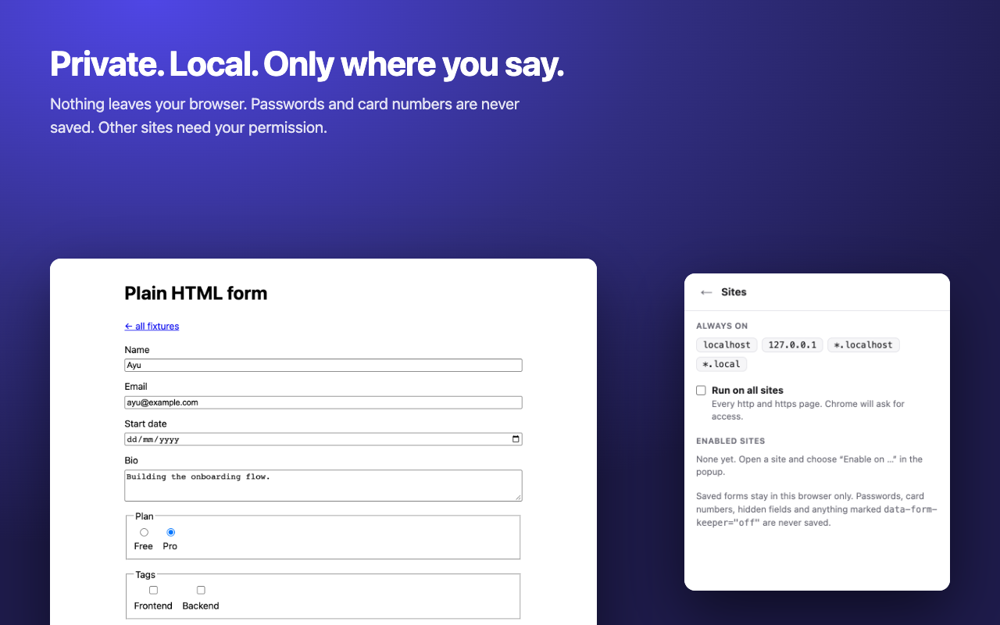

Built for the forms that actually break.
Saves as you type
Text, checkboxes, radio buttons and dropdowns are kept automatically and filled back in on load, even on pages that render late.
Works with modern sites
Restored values reach React, Vue and Svelte, not just the screen, so the form really holds your data again.
Even custom dropdowns
Handles popular dropdown and date-picker libraries. For anything unusual, use it once and form-keeper learns it.
Private by design
Everything stays in your browser. Passwords, card numbers and hidden fields are never saved.
Only where you allow
It runs on development sites by default. Any other site needs your permission, one site at a time.
See what it's doing
The icon shows when it's active, and the popup lists what is saved and anything it couldn't restore.
Install in a minute
The Chrome Web Store version is coming. Until then, this takes six clicks and no technical knowledge.
Download and unzip
Download the zip, then unzip it (Mac: double-click; Windows: right-click, Extract All). Keep the folder somewhere permanent, like Documents.
Open the extensions page
Paste
chrome://extensionsinto the address bar and press Enter. (Edge:edge://extensions.)Turn on Developer mode
The switch is at the top right. It's only needed to load an extension from a folder.
Click “Load unpacked”
Choose the unzipped folder, the one that contains
manifest.json.Pin the icon
Click the puzzle piece in the toolbar, then the pin next to form-keeper.
Use it
On a development site it works straight away. On any other site, click the icon and choose “Enable on this site”.
More help, updating and troubleshooting: full install guide.
A closer look




Questions
Does it send my data anywhere?
No. Saved forms live in your browser's local extension storage and are never sent to a server. form-keeper has no account, no analytics and no network requests of its own. See the privacy policy.
What does it never save?
Password fields, hidden fields (often security tokens), file inputs, credit card fields, and anything you mark with data-form-keeper="off".
Why does it ask for access to other sites?
It doesn't unless you ask it to. To use it on a site that isn't a development site, you press “Enable on this site” and your browser asks for permission for that site only. You can remove it again at any time in the popup's settings.
A dropdown didn't come back. What now?
Open the popup: it lists anything it couldn't restore and why. Press “Teach a control”, then use that dropdown once on the page. After that it is saved and restored like any other field.
Is it free? Is the code public?
Yes to both. The source is on GitHub.